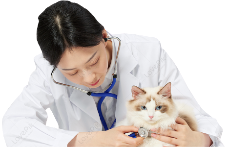
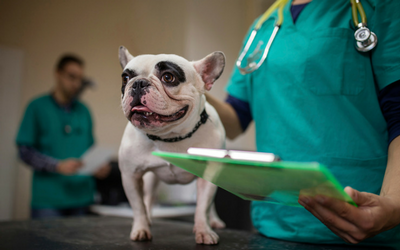
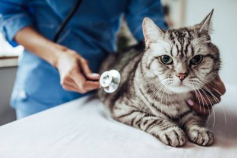

|
In addition to feeding and exercising your dog, other aspects of general care are needed to keep your dog healthy throughout its life. These include routine veterinary care for vaccinations, parasite control, and dental care; grooming; and protection from household hazards. |
 |
It’s important to make sure that your cat has the proper veterinary care, vaccines, diet, parasite prevention, and mental and physical stimulation that they need from the time you adopt them.Contact your veterinarian if you notice any signs of illness in your pet. Keep in mind that even a dog that looks healthy can spread germs to people and other animals.
|  |
Dogs HealthKeeping your dog healthy helps to keep you and your family healthy. Make sure your dog has access to fresh, clean water and food every day. Talk to your veterinarian about the right type of food for your dog. Take your dog to the veterinarian regularly to keep it healthy and prevent infectious diseases. Click Here |
|  |
Cats HealthVaccination is a very important aspect of kitten health care. There are many serious but preventable diseases that your veterinarian will recommend vaccinating against. While many shelters will give the first round of vaccines, you will need to take your kitten to the vet to continue the series of vaccines. Click Here |